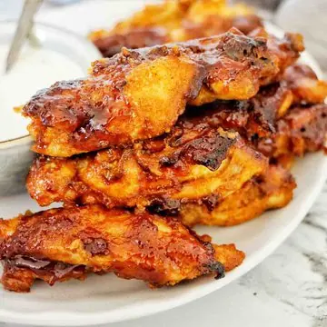

Chicken Ribs (Baked then Grilled)

Equipment
- 1 Glass jug to combine the chicken seasonings
- 1 Mini whisk
- 1 Large glass jug to combine the bbq sauce ingredients
- 1 Baking dish with 2 - 3 inch rim
- 1 Kitchen Tongs
- 1 Chopping board
- 1 Spray oil
- 2 Oven Mits
- 1 Paper towel
- 1 Silicon Baking Mat
- 1 Pastry Brush to coat the ribs with the bbq sauce
- 1 Baking tray with rack
Ingriedients
Spice Rub
- 1 tablespoon garlic powder
- 1 tablespoon onion powder
- 1 tbsp mustard powder
- ½ tablespoon cayenne pepper
- ½ tablespoon paprika
- ¼ teaspoon kosher salt
- ¼ teaspoon black pepper
Ribs
- 1kg/2 pounds chicken ribs
BBQ Sauce
- ½ cup/125ml bbq sauce
- ½ cup/125ml tomato sauce (ketch up)
- 2 tbs Worcestershire sauce
- 2 tbs honey
Instructions
- Preheat the oven: preheat the oven to 180°C / 350-375°F / Gas Mark 4-5.
- Dry rub: combine the garlic powder, onion powder, mustard powder,
cayenne pepper, paprika, salt and pepper in a small glass and use a
mini whisk to combine.
- Barbecue sauce: combine the bbq sauce, tomato sauce, Worcestershire
sauce and honey in a jug and use a mini whisk to combine.
- Chicken ribs: pat the chicken ribs dry using paper towel and a chopping
board. Then transfer them to a medium bowl.
- Rub onto ribs: sprinkle half of the dry rub over the ribs and then use
kitchen tongs to toss and combine. Then sprinkle in the other half and
again toss to combine.
- Baking dish: spray a baking dish with olive oil. Then add the seasoned
ribs to the dish in one flat later. Cover with foil and place in to
the oven on the middle shelf. Allow to cook for 15 minutes, then use
kitchen tongs to remove, place on a heat proof surface, pull the foil
off and use tongs to rotate the ribs to the other side. Place the foil
back on and then place the ribs back into the oven for another
15 minutes.
- Grill/broil: use oven mits to remove the cooked ribs from the oven and
place on a heat proof surface. Change the oven setting to grill at
200°C 392°F6. Use kitchen tongs to transfer each rib to a silicon
baking mat on an oven rack and tray. Use the pastry brush to re coat
each rib with the homemade bbq sauce. Place the tray into the oven
on the top shelf. Grill the ribs for 10 mins. Repeat basting and
grilling x 1. (Total grill time is 2 x 10 mins = 20 minutes).
- Serve and enjoy: use oven mits to remove the baking tray from the oven
and place on a heat proof surface. Let the ribs rest for 1 to 2 minutes
before using tongs to transfer them to a serving plate. Provide
horseradish yogurt sauce (optional) for serving.